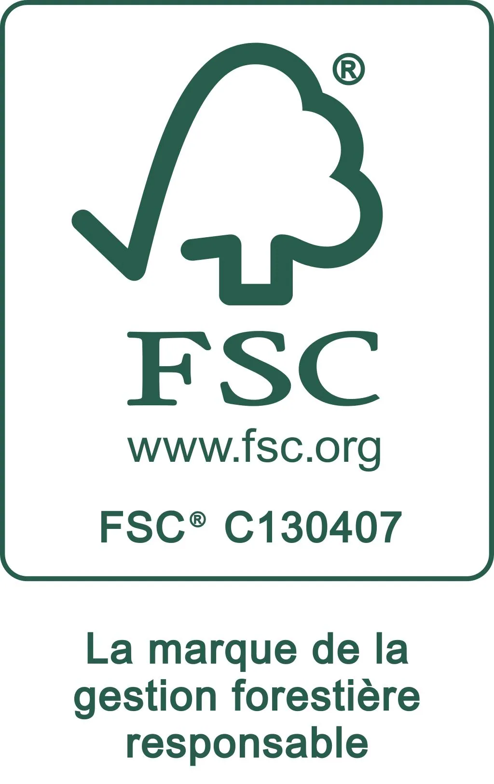
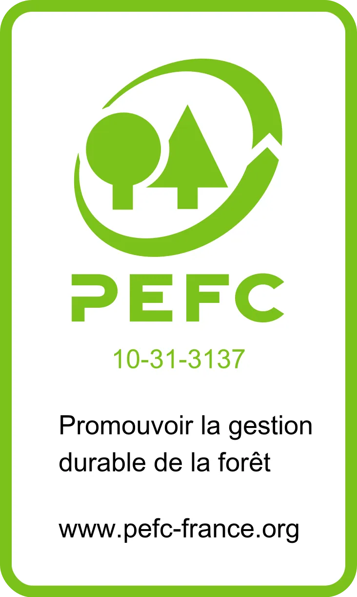

FSC®
Le Forest Stewardship Council® encourage une gestion responsable des forêts et une traçabilité contrôlée des produits à base de bois.
Chaîne de contrôle FSC® BV-COC-130407
Nos engagements
Premibel s’engage à proposer des parquets de qualité en favorisant des approvisionnements contrôlés, traçables et respectueux des écosystèmes forestiers.
Chez Premibel, le bois est une matière noble que nous sélectionnons avec exigence.
Une forêt bien gérée est une forêt exploitée avec mesure, dans le respect de la faune, de la flore, des sols et des populations qui en dépendent. Elle doit préserver son équilibre, limiter les risques liés à la déforestation et garantir une ressource bois mieux encadrée.
FSC® et PEFC
FSC® et PEFC sont deux repères reconnus pour encourager une gestion plus responsable des forêts et une meilleure traçabilité du bois.

Le Forest Stewardship Council® encourage une gestion responsable des forêts et une traçabilité contrôlée des produits à base de bois.
Chaîne de contrôle FSC® BV-COC-130407

PEFC promeut la gestion durable des forêts et la certification des chaînes d’approvisionnement liées aux produits bois.
Chaîne de contrôle PEFC BVFR-PEFC-COC-6266690
Deux labels de référence pour mieux identifier les produits issus de démarches de gestion forestière et de traçabilité plus encadrées. Seuls les produits identifiés comme tels sont certifiés.
Nos engagements
Pour mieux maîtriser l’origine du bois et encourager des pratiques plus responsables.
Nous privilégions les bois issus de forêts gérées de manière responsable, afin de préserver la biodiversité, les sols et l’équilibre naturel des écosystèmes.
Premibel met en place une démarche de diligence raisonnée pour surveiller ses approvisionnements et demander des preuves de provenance à ses fournisseurs.
Lorsque cela est possible, nous favorisons les solutions intégrant des matières recyclées, notamment sur certains produits techniques et solutions d’isolation.
Notre méthode de contrôle
La protection des forêts passe aussi par une organisation claire.
Nous travaillons avec des partenaires capables d’apporter des garanties sur l’origine des bois.
Les documents disponibles permettent de vérifier les circuits d’approvisionnement et la traçabilité.
Les références, produits et informations fournisseurs sont contrôlés avec attention.
La démarche progresse dans le temps pour renforcer la part de produits responsables.
Catalogue
Questions fréquentes
La traçabilité permet de mieux identifier l’origine des bois, de vérifier les fournisseurs et de limiter les risques liés aux bois provenant de zones exploitées de manière illégale ou irresponsable.
Tous les produits ne sont pas nécessairement certifiés individuellement. En revanche, Premibel privilégie les partenaires capables de fournir des produits labellisés et développe progressivement cette part dans son offre.
La diligence raisonnée consiste à surveiller les approvisionnements, demander des preuves, contrôler les fournisseurs et mettre en place des procédures internes pour mieux garantir la provenance responsable des bois.
Choisir durablement
Chez Premibel, le bois est une matière noble que nous sélectionnons avec exigence. Découvrez nos collections et trouvez un parquet adapté à votre intérieur comme à vos valeurs.